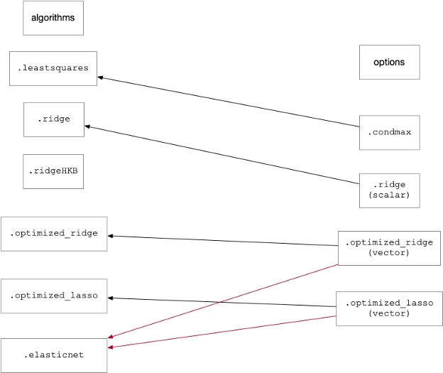

Mlr
Purpose
Multiple Linear Regression for multivariate Y.
Synopsis
- model = mlr(x,y,options)
- pred = mlr(x,model,options)
- valid = mlr(x,y,model,options)
- mlr % Launches analysis window with MLR as the selected method.
Please note that the recommended way to build and apply a MLR model from the command line is to use the Model Object. Please see this wiki page on building and applying models using the Model Object.
Description
MLR identifies models of the form Xb = y + e.
Inputs
- x = X-block: predictor block (2-way array or DataSet Object)
- y = Y-block: predictor block (2-way array or DataSet Object)
Outputs
- model = scalar, estimate of filtered data.
- pred = structure array with predictions
- valid = structure array with predictions
Options
options = a structure array with the following fields.
- display: [ {'off'} | 'on'] Governs screen display to command line.
- plots: [ 'none' | {'final'} ] governs level of plotting.
- algorithm: [ {'leastsquares'} | 'ridge' | 'ridge_hkb' | 'optimized_ridge' | 'optimized_lasso' | 'elasticnet' ] Governs the level of regularization used when calculating the regression vector.
- condmax: [{[ ]}] Value for maximum condition number. Default value = [] leads to MLR calculation at full rank. Any value > 0 leads to truncation of factors based upon SVD until the condition number is less than the specified value. Used only for algorithm 'leastsquares'.
- ridge: [ { 1 } ] Scalar value for ridge parameter for algorithm 'ridge'.
- optimized_ridge: Vector of ridge (L2) entries used to determine optimized value for θ for algorithms 'optimized_ridge' or 'elasticnet'
- optimized_lasso: Vector of ridge (L1) entries used to determine optimized value for θ for algorithms 'optimized_lasso' or 'elasticnet'
- preprocessing: { [] [] } preprocessing structure (see PREPROCESS).
- blockdetails: [ 'compact' | {'standard'} | 'all' ] level of detail (predictions, raw residuals, and calibration data) included in the model.
- ‘Standard’ = the predictions and raw residuals for the X-block as well as the X-block itself are not stored in the model to reduce its size in memory. Specifically, these fields in the model object are left empty: 'model.pred{1}', 'model.detail.res{1}', 'model.detail.data{1}'.
- ‘Compact’ = for this function, 'compact' is identical to 'standard'.
- 'All' = keep predictions, raw residuals for both X- & Y-blocks as well as the X- & Y-blocks themselves.
MLR Algorithms
Leastsquares
Standard MLR regression carried out to the full rank of the x-block is obtained by setting options.algorithm = 'leastsquares' and leaving options.condmax empty (default setting). For options.condmax > 0, singular value decomposition is performed on , and factors are removed from the decomposition (in reverse order of the eigenvalues) until the condition number of the covariance matrix is less than this value.

Beginning with PLS_Toolbox/Solo 9.1, additional options are available for regularization when constructing MLR models. Adding regularization to an MLR model may be helpful when the x-block is ill-conditioned and can also be used as a variable selection tool.
Ridge
Ridge regularization based upon the standard formulation from Hoerl and Kennard (1970)
may be selected by setting options.algorithm = 'ridge' and setting a positive scalar value for (regularization parameter) in options.ridge; the regression vector is calculated directly through matrix inversion.


Ridge HKB
An estimate of an optimal value for and the corresponding regression vector may be determined using the method of Hoerl, Kennard, and Baldwin (1975) by setting options.algorithm = 'ridge_hkb'. No other parameters are used for this option and the resulting optimal value of is calculated by matrix inversion.
Optimized Ridge
Ridge regularization can also be cast as an optimization (in this case, the L2 norm of ) and is included for completeness. For this case, options.algorithm = 'optimized_ridge' and the optimal value of is obtained from the range in options.optimized_ridge (vector). This mode may be used to place bounds around the value of .
Optimized Lasso
Lasso regularization minimizes the L1 norm of and uses the settings options.algorithm = 'optimized_lasso' and supplying a vector of values for the appropriate parameter in options.optimized_lasso.
Elasticnet
Elastic net regularization seeks to minimize the L2 and L1 norms of simultaneously using the initial estimates for the parameters in options.optimized_ridge and options.optimized_lasso, respectively. The appropriate value for options.algorithm is 'elasticnet' for this scenario.
The following figure shows the valid settings options.algorithm and the corresponding parameters which are used as inputs for these methods:

Note that the MATLAB Parallel Computing Toolbox (PCT) will be used for calculations based upon numerical optimization if installed, but is not required.
Regression vectors are available for all algorithms from model.reg. The following table provides a list of parameters provided in the calibrated models specific to each algorithm:
| algorithm | calibrated model parameters |
|---|---|
'leastsquares' |
model.detail.mlr.condmax_value:
|
'ridge' |
: model.detail.ridge_theta
|
'ridge_hkb' |
: model.detail.mlr_ridge_hkb_theta
|
'optimized_ridge' |
model.detail.mlr.optimized_ridge_theta contains the vector of L2 () values supplied in options.optimized_ridge
|
'optimized_lasso' |
model.detail.mlr.optimized_lasso_theta contains the vector of L1 () values supplied in options.optimized_lasso
|
'elasticnet' |
entries above for both optimized_ridge and optimized_lasso algorithms apply
|
In MLR, our hypothesis function is

where is the regression vector we wish to calculate.
The loss function for MLR is

The cost function is used to minimize the loss , and is found by the following equation


But when it comes to regularization, the is differed by the incorporation of the penalty terms. Consult the table below to note the differences in the cost functions between each algorithm:
| options.algorithm | (Cost Function) |
|---|---|
| 'leastsquares' | |
| 'optimized_ridge' | |
| 'optimized_lasso' | |
| 'elasticnet' |


Note: pertains to the L2 penalty value and pertains to the L1 penalty value.


Studentized Residuals
From version 8.8 onwards, the Studentized Residuals shown for MLR Scores Plot are now calculated for calibration samples as:
MSE = sum((res).^2)./(m-1); syres = res./sqrt(MSE.*(1-L));
where res = y residual, m = number of samples, and L = sample leverage. This represents a constant multiplier change from how Studentized Residuals were previously calculated. For test datasets, where pres = predicted y residual, the semi-Studentized residuals are calculated as:
MSE = sum((res).^2)./(m-1); syres = pres./sqrt(MSE);
This represents a constant multiplier change from how the semi-Studentized Residuals were previously calculated.
See Also
analysis, crossval, ils_esterror, modelstruct, pcr, pls, preprocess, ridge, testrobustness, EVRIModel_Objects